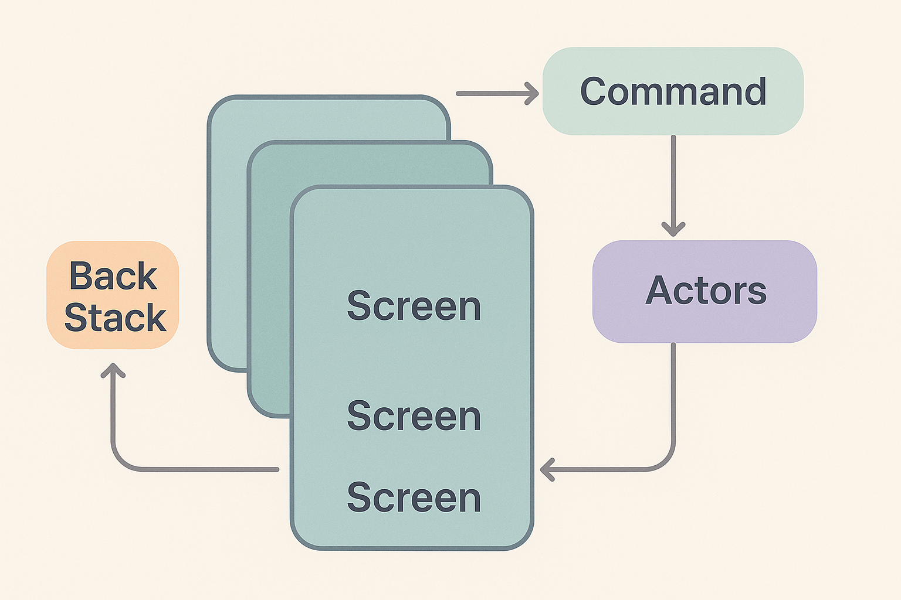

Гибкий и мощный навигационный фреймворк
NavSymphony был создан как ответ на ограниченную функциональность первых версий Jetpack Compose Navigation. Он обеспечивает полный контроль над стеком экранов, сложными цепочками переходов и поддерживает гибкую архитектуру приложений. Современный Navigation 3 также реализует стек экранов и упрощает работу с несколькими маршрутов, но NavSymphony появился раньше и обеспечивает больше гибкости для бизнес‑сценариев.
Диаграмма ниже показывает, как NavSymphony управляет стеком экранов, обрабатывает push/pop операции и взаимодействует с commands и actors.

Как и другие мои проекты, NavSymphony тщательно покрыт unit‑тестами, что обеспечивает высокую стабильность и надёжность. Автоматизация CI/CD позволяет быстро разворачивать новые версии и получать обратную связь на каждом этапе разработки.